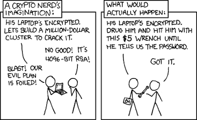

Установка и подготовка к работе
Для cryptoloop нам потребуется установить небольшой пакет:
sudo aptitude install loop-aes-utils
Далее загружаем модуль cryptoloop:
sudo modprobe cryptoloop
он должен появиться в списке модулей ядра, проверить который можно командой lsmod.
Шифруем файлы и разделы с помощью Cryptoloop и алгоритма AES
Для начала нужно определиться: указываемый метод НЕ ПРЕДНАЗНАЧЕН для шифрования разделов с данными, а только для создания зашифрованных разделов, куда эти данные потом будут скопированы. Так что если вы сотрёте свой раздел с важными данными - пеняйте на себя и читайте в следующий раз внимательно.
Если следовать рецептам ниже с головой и всё сделать правильно, то в результате мы получим раздел\файл, с которым можно будет работать, как с любым диском на чтение и запись - с той разницей, что данные там будут зашифрованы. Каждый раз при монтировании нас будут спрашивать пароль для доступа к этим файлам.
Итак, начинаем подготавливать криптораздел\криптофайл, куда мы скопируем ценные данные и зашифруем.
0. Создание криптофайла или криптораздела
Если мы хотим создать один большой файл, который будет содержать зашифрованные файлы, делаем это так:
dd if=/dev/zero of=~crypto.file bs=1M count=30
В данном примере это файл на 30 Мб, но при нужде можно сделать сколько угодно.
Или ищем флешку, на которой есть пустой раздел - этот пустой раздел мы сделаем шифрованным. Допустим, это будет /dev/sdd2 который мы скоро отформатируем и зашифруем.
Ещё раз:/dev/sdd2 это НЕ раздел с вашими данными, а пустой раздел, куда вы эти данные переместите - и они при этом зашифруются. О создании разделов можно почитать в посте о форматировании.
1. Связываем устройство с loop device (петлевым устройством) с использованием шифрования
В случае криптофайла:
losetup -e aes /dev/loop0 ~crypto.file
В случае криптораздела:
losetup -e aes /dev/loop0 /dev/sdd2
При любом варианте вас попросят ввести пароль - он будет использоваться для доступа к вашим файлам.
cat file | losetup -e aes /dev/loop0 /dev/sdd2 -p0
Пароль меньше 20 символов оно не примет - и правильно сделает. Излишне напоминать, что если забудете пароль - не сможете примонтировать данные обратно. Для любопытных: ключ -e aes указывает программе использовать шифрование AES, который довольно устойчив ко взлому.
Теперь больше работать с устройством через /dev/sdd2 или crypto.file мы не будем, потому как оно зашифровано и система его просто так не примонтирует. Вместо этого работать мы будем именно с петлевым устройством, на которое замкнули криптофайл или криптораздел - оно может быть /dev/loop0 или другое (необязательно каждый раз замыкать на одно и то же устройство).
2. Форматирование зашифрованного раздела или файла
После того, как мы связали устройство или файл с loop-device, нужно его отформатировать:
mkfs.ext2 /dev/loop0
В этом примере мы отформатировали на файловую систему Ext2, но можно использовать любую.
3. Перенос данных и работа с зашифрованным разделом или файлом
Работаем с петлевым устройством, как с обычным разделом: монтируем, записываем на него данные и так далее. Монтирование зашифрованного раздела или файла выглядит так:
mkdir /mnt/cryptodisk <--- это если точка монтирования ещё не создана
mount /dev/loop0 /mnt/cryptodisk
Размонтирование:
umount /dev/loop0
Больше о монтировании можно прочитать в соответствующем посте.
4. Окончание работы с криптофайлом\криптоустройством
После отмонтирования нужно отвязать устройство или файл от петлевого устройства:
losetup -d /dev/loop0
На всякий случай, просмотреть список задействованных петлевых устройств (loop devices) можно командой:
losetup -a
Теперь петлевое устройство свободно, данные зашифрованы, враг не пройдёт.
А как теперь обратно прикрутить криптованный раздел или файл?
Легко - доступ к зашифрованным данным можно получить, опять привязав к петлевому устройству криптораздел\криптофайл и введя пароль, который вы назначили ранее. То есть в случае криптофайла:
losetup -e aes /dev/loop0 ~crypto.file
В случае криптораздела:
losetup -e aes /dev/loop0 /dev/sdd2
Вас снова попросят ввести пароль, который нужен для доступа к вашим файлам.
Теперь мы имеем раздел или файл, который невозможно примонтировать просто так (он зашифрован и Linux не увидит на нем файловую систему). Но после прикручивания к петлевому устройству все данные будут доступны (если вы знаете пароль, разумеется).
Альтернативы
Лирическое отступление
Не хотелось бы разочаровывать начинающих криптоанархистов, но ребята с xkcd в общем реалистично смотрят на вещи:

Тем не менее, светить своими данными не комильфо, и какое-то время вы выиграете.